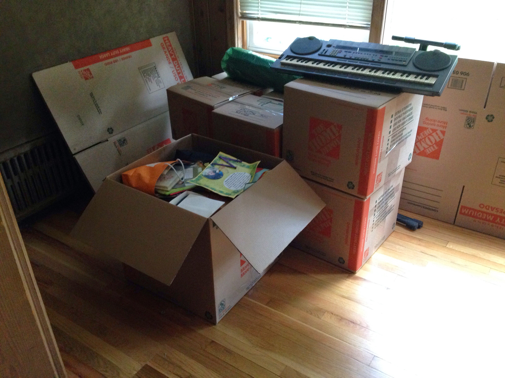

The Bits Between the Bits
How we get to main()
Matt Godbolt
@mattgodbolt
CppCon 2018
"Good, but non-essential" — progarchives.com
© Ozric Tentacles, used under Fair Use.
A program
int main() {}
$ gcc -Os empty.c -o c/empty
$ g++ -Os empty.cpp -o cpp/empty
$ ls -l c/empty cpp/empty
7976 c/empty
7976 cpp/empty
What's in it?
$ objdump --no-show-raw-insn -dC cpp/emptyWhat's in it?
$ readelf -a cpp/emptyThe ELF file format

By Surueña [CC BY-SA 3.0], from Wikimedia Commons
{kind=link}
Sections
.text— code.rodata— read-only data.data— read/write data.bss— zero-initialised data
How we get to main()
A (slightly) more interesting program
struct Foo {
static int numFoos;
Foo() {
numFoos++;
}
~Foo() {
numFoos--;
}
};
int Foo::numFoos;
Foo globalFoo;
int main() {
std::cout << "numFoos = "
<< Foo::numFoos << "\n";
}
What does it print?
$ g++ -O0 -g global.cpp -o global
$ ./global
numFoos = 1
Code Archaeology - Part 1

Matt Godbolt [CC BY-SA 3.0]
Call stack
#0 Foo::Foo (this=0x601050 <global>) at global.cpp:6
#1 0x000000000040079d in __static_initialization_and_destruction_0 (
__initialize_p=1, __priority=65535) at global.cpp:14
#2 0x00000000004007b3 in _GLOBAL__sub_I_global.cpp(void) () at global.cpp:18
#3 0x000000000040082d in __libc_csu_init ()
#4 0x00007ffff70c1b28 in __libc_start_main (main=0x400702 <main()>, argc=1,
... at ../csu/libc-start.c:266
#5 0x000000000040064a in _start ()
Where do these functions come from?
https://godbolt.org/z/cppcon2018_1Who calls this function?

By Google Inc. -
https://chromium.googlesource.com/chromium/src/+/master/ui/webui/resources/images/google_logo.svg,
Public Domain, Link
{kind=link}
libc spelunking

libc spelunking
// Paraphrased from glibc/csu/elf-init.c
typedef void (*init_func)(int, char **, char **);
extern init_func __init_array_start[];
extern init_func __init_array_end[];
int __libc_csu_init(int argc, char **argv, char **envp) {
const size_t size = __init_array_end - __init_array_start;
for (size_t i = 0; i < size; i++)
(*__init_array_start[i])(argc, argv, envp);
}
Ok but...
__init_array_start?__init_array_end?
What's going on here?
.section .init_array,"aw"
.align 8
.quad _GLOBAL__sub_I_i
.text
The Linker
Matt Godbolt [CC BY-SA 3.0]
The Linker
What does it do?
- Resolves references between
.ofiles - Determines the layout of an executable
- Writes metadata
A more representative program
// hello.cpp
extern const char *getMessage();
void greet() {
std::cout << getMessage() << "\n";
}
int main() {
greet();
}
// message.cpp
const char *getMessage() {
return "Hello world";
}
$ g++ -Os -o hello.o hello.cpp
$ g++ -Os -o message.o message.cpp
$ g++ -Os -o hello message.o hello.o
$ ./hello
Hello world
Object files
$ file hello hello.o message.o
hello: ELF 64-bit LSB executable, x86-64,
dynamically linked, interpreter /lib64/ld-linux-x86-64.so.2,
for GNU/Linux 3.2.0, not stripped
hello.o: ELF 64-bit LSB relocatable, x86-64, version 1 (SYSV), not stripped
message.o: ELF 64-bit LSB relocatable, x86-64, version 1 (SYSV), not stripped
What's in an object file?
$ objdump -dC hello.oRelocations

Matt Godbolt [CC BY-SA 3.0]
What's in an object file?
$ objdump --reloc -dC hello.oRelocations
- Different types
- Used within same object file
Symbols
Matt Godbolt [CC BY-SA 3.0]
Symbols
$ objdump --syms -C hello.oSymbols
$ objdump --syms -C message.oLinker...
- Reads all the inputs
- Identifies symbols
- Applies relocations
message.o
.text
getMessage().ro-data
"Hello world"hello.o
.text
greet().text.init
main()
hello
Program Headers
.text
greet() {}getMessage()main().ro-data
"Hello world"
Linker Scripts
$ g++ -o /dev/null -x c /dev/null -Wl,--verbose
.init_array :
{
PROVIDE_HIDDEN (__init_array_start = .);
KEEP (*(SORT_BY_INIT_PRIORITY(.init_array.*) SORT_BY_INIT_PRIORITY(.ctors.*)))
KEEP (*(.init_array EXCLUDE_FILE (
*crtbegin.o *crtbegin?.o *crtend.o *crtend?.o ) .ctors))
PROVIDE_HIDDEN (__init_array_end = .);
}
Now we know!
- Compiler:
- "static init" function for each TU
- pointer to this function into
init_array
- Linker:
- gathers all init_arrays together
- script defines symbols pointing at begin and end of
init_array
- C runtime walks
init_arrayand calls each
Stuff to know
- You can write your own linker scripts
- Linker can discard unused sections:
-Wl,--gc-sections - Compiler flags:
-ffunction-sections,-fdata-sections
Dynamic linking
$ ls -l dynamic/hello static/hello
8,688 dynamic/hello*
2,406,632 static/hello*
Another hello world
$ g++ -Os -o message.o message.cpp
$ g++ -shared -o libhello.so message.o
$ g++ -Os -o hello hello.o
$ g++ -Os -o hello.o hello.cpp -L. -lhello
$ ./hello
Hello world
More ELF headers
$ readelf --dynamic --program-headers dynamic-dso/helloCode Archaeology - Part 2
Matt Godbolt [CC BY-SA 3.0]
getMessage()@plt:
0x4006b0: jmpq *0x200962(%rip) # 0x601018
0x4006b6: pushq $0x0
0x4006bb: jmpq 0x4006a0 ; ultimately resolves symbol 0
...
0x601018: .quad 0x4006b6
getMessage()@plt:
0x4006b0: jmpq *0x200962(%rip) # 0x601018
0x4006b6: pushq $0x0
0x4006bb: jmpq 0x4006a0
...
0x601018: .quad 0x7ffff7bd35d5 ; now resolved to getMessage()
Debugging
LD_BIND_NOW(and-Wl,-znow)lddandLD_DEBUGLD_PRELOAD
I wish I had more time
- Weak references
- ODR violations
- LTO
More reading
- Ian Lance Taylor's blog - www.airs.com/blog
- Honza Hubička's blog - hubicka.blogspot.com/
Special Training Event
- Summer 2019 — Denver Area
- Charley Bay, Jason Turner and me together for 3 days
- C++20, error handling and performance
- Check out coloradoplusplus.info for more info
Bonus slides
Weak references
Semantic interposition
- global symbols in shared libs still go through PLT - https://godbolt.org/z/CucbcV
-Bsymbolic